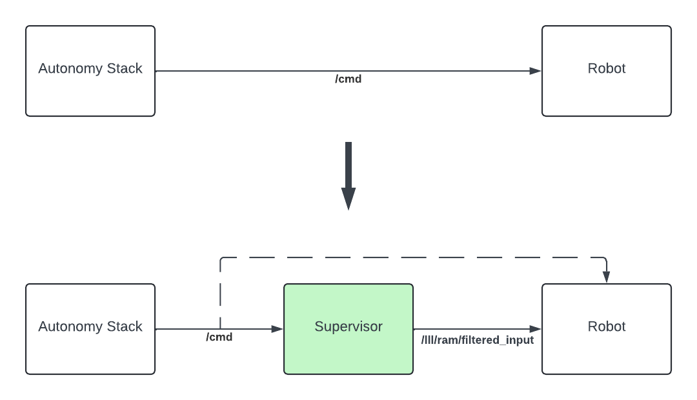
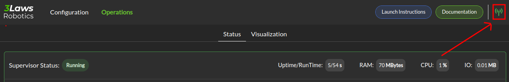

Getting started
The current version of 3Laws Supervisor supports ground-based mobile platforms (wheeled or legged) with the following movement modalities:
Differential-drive
Omni-directional
Front-wheel steering - experimental
For perception, 3Laws Supervisor currently supports:
Raw 2D laserscan data
Pre-processed map of obstacles with their locations and shapes
The 3Laws Supervisor software is a ROS node available on x86_64 and ARM-64 processor architectures for multiple OS/ROS combinations:
Ubuntu Distribution |
ROS1 version |
ROS2 version |
|---|---|---|
22.04 |
N/A |
Humble/Iron |
20.04 |
Noetic |
Galactic/Foxy |
1. Install Supervisor
To install Supervisor on the system, open a terminal (on the target device) and run the following command:
bash <(curl https://raw.githubusercontent.com/3LawsRobotics/3laws/master/install.sh)
This will run a script to auto-detect the system architecture, install any missing dependencies, download the right binary, and guide you through any necessary configuration steps.
Important
sudo permission may be required in order to run APT during software installation.
Note
The ROS packages are installed into the global ROS installation directory. You will need to source the ROS setup script to make the new components available in the current terminal: source /opt/ros/<DISTRO>/setup.sh.
As with most ROS setups, adding a line to the startup file (ex. .bashrc) that sources the ROS environment is recommended.
2. Start the Control Panel
Before the Supervisor can be started, it must be configured. In order to configure it, a web-based Control Panel is provided. The Control Panel creates if needed and modifies the file ~/.3laws/config/supervisor.yaml.
An existing (or backup) version of this file can be used if it is placed in the proper location; however, older versions might no be compatible with new software. If this file is copied from another device, please update the license.
To enable the Control Panel backend service, open a terminal and run the following command:
3laws control-panel autostart enable
Note
See CLI reference for more options to start the control panel.
3. Configure Supervisor
Now that the Control Panel backend is running, access the control panel from any machine on the same network as the robot by opening a web browser and navigating to the following URL: http://<IP_ADDRESS_OF_THE_ROBOT>:8000/.
The initial view of the Control Panel is the “Configuration” page, which consists of sections (tabs) listed as:
Warning
The entire configuration process needs to be completed before starting the Supervisor software. If a part of the configuration is missing, the associated tab will be orange in color. Once the configuration is complete all tabs should be white.
Note
See Control Panel reference for more details on the configuration options.
Note
The Supervisor does not have to run during the configuration step. It loads the configuration file at start-up, so it needs to be started after the configuration is created/updated. However, if the rest of the robot is running while the Supervisor is being configured, the Control Panel will pre-filled the configuration with available information.
4. Interface with your stack
In order to perform collision avoidance maneuvers, the Supervisor must be able to send commands to your robot actuators. These commands will be published on the /lll/ram/filtered_input topic.
Your low-level controller therefore needs to subscribe to this topic and apply the commands to your robot:
{kind=link}
For that, you can either create an extra dedicated subscriber in your low-level control stack to receive the commands from the Supervisor, or you can use ROS topic remapping feature to remap the low-level controller subscription from /cmd to /lll/ram/filtered_input:
When running the control node:
rosrun controller controller /cmd:=/lll/ram/filtered_input
Inside the control node launch file:
<launch>
<remap from="/cmd" to="/lll/ram/filtered_input" />
<node name="controller" pkg="controller" type="controller" />
</launch>
When including your low-level control stack launch file into another launch file:
<launch>
<group>
<include file="$(find controller)/launch/controller.launch" />
<remap from="/cmd" to="/lll/ram/filtered_input" />
</group>
</launch>
When running the control node:
ros2 run controller controller --ros-args -r /cmd:=/lll/ram/filtered_input
Inside the control node launch file:
Node(
package="controller",
executable="controller",
output="screen",
remappings=[
("/cmd", "/lll/ram/filtered_input"),
],
)
When including your low-level control stack launch file into another launch file:
from ament_index_python.packages import get_package_share_directory
from launch import LaunchDescription
from launch.actions import GroupAction, IncludeLaunchDescription
from launch.launch_description_sources import PythonLaunchDescriptionSource
from launch.substitutions import PathJoinSubstitution
from launch_ros.actions import SetRemap
def generate_launch_description():
launchDesc = LaunchDescription()
launchDesc.add_action(
GroupAction(
[
SetRemap("/cmd", "/lll/ram/filtered_input"),
IncludeLaunchDescription(
PythonLaunchDescriptionSource(
PathJoinSubstitution(
[
get_package_share_directory("controller"),
"launch",
"controller.py",
]
)
)
),
]
)
)
return launchDesc
5. Launch
To launch the Supervisor directly, use the following command:
roslaunch lll_supervisor supervisor.launch
ros2 launch lll_supervisor supervisor.launch.py
To include the Supervisor as part of your launch file, use the following code snippets:
<include file="$(find lll_supervisor)/launch/supervisor.launch">
<arg name="log_level" value="info"/>
</include>"
from ament_index_python.packages import get_package_share_directory
from launch import LaunchDescription
from launch.actions import IncludeLaunchDescription
from launch.launch_description_sources import PythonLaunchDescriptionSource
from launch.substitutions import PathJoinSubstitution
def generate_launch_description():
launchDesc = LaunchDescription()
launchDesc.add_action(
IncludeLaunchDescription(
PythonLaunchDescriptionSource(
PathJoinSubstitution(
[
get_package_share_directory("lll_supervisor"),
"launch",
"supervisor.launch.py",
]
)
),
launch_arguments={
"log_level": "info",
}.items(),
)
)
return launchDesc
If ROS is unable to find the lll_supervisor, re-run the source command for the ROS paths.
6. Monitor your system (optional)
The Control Panel provides an Operation page that can be used to monitor the status of the Supervisor working with your stack.
The Operation page requires that both the Supervisor and the Control Panel backend are running. Additionally, a rosbridge websocket must be running on the same network as the Supervisor.
To install the rosbridge suite, run the following command:
sudo apt-get install ros-<DISTRO>-rosbridge-suite
To start the rosbridge websocket, run the following command:
roslaunch rosbridge_server rosbridge_websocket.launch
ros2 launch rosbridge_server rosbridge_websocket_launch.xml
Important
Make sure to specify the rosbridge websocket IP address and port in the Control Panel if using something other than the defaults:
{kind=link}
Note
See Control Panel reference for more details on the operation page.
7. Update (optional)
You can check for updates to the Supervisor by running the following command:
3laws check-update
To update the Supervisor, use the same command as for the installation:
bash <(curl https://raw.githubusercontent.com/3LawsRobotics/3laws/master/install.sh)
Note
The supervisor will be updated to the latest version available for the system’s distribution. The existing configurations will not be modified, but if new variables need to be configured, advisories will be given during the installation.
8. What’s next?
Continue with User Guide to discover everything the Supervisor can do.